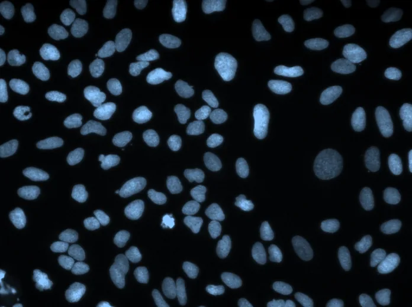
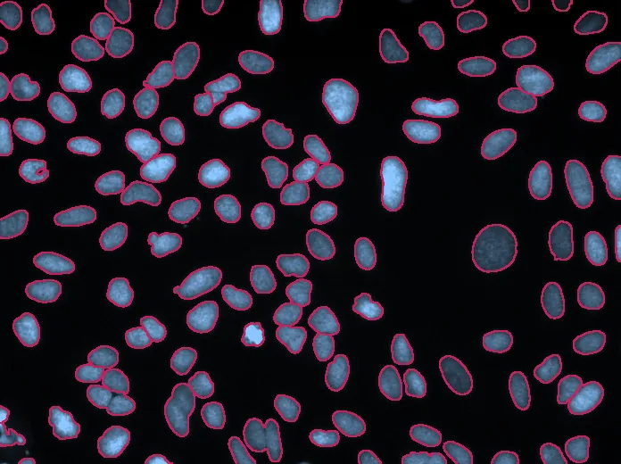
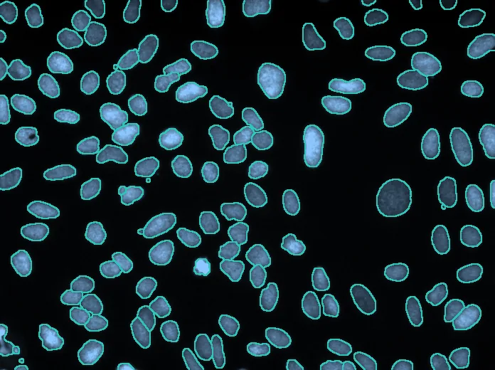

Experiment tray
Drop 5 to 20 images. Each is numbered, labelled by condition and replicate from its file name, and checked for format, size, bit depth, stacks and duplicates.
Nuclear instance segmentation and quantification
BioNuclei is an automated analysis pipeline designed specifically for nuclear instance segmentation and quantification in fluorescence microscopy. AI predicts semantic regions; deterministic scientific software extracts individual nuclei, measurements and provenance.

Measured, not claimed
The released model with the Lab’s decoder on BBBC039, a public benchmark of U2OS nuclei with expert outlines. This is the test image with the median score, not the best one.

Input · 16-bit Hoechst
BioNuclei · 131 nuclei
Expert ground truth · 142 nucleiPixel overlap with expert masks
Instance-level agreement, penalizes merges and splits
Official held-out split, never used in training
Mean nuclei per image; dense clusters are undercounted
Inside a BioNuclei run
Each stage below is real code in the repository. Select one to see what it does, why it matters and what you get from it.
Built for real experiments
The Lab checks every file before anything leaves your computer, then runs only what you choose.
Drop 5 to 20 images. Each is numbered, labelled by condition and replicate from its file name, and checked for format, size, bit depth, stacks and duplicates.
Reads channel names and wavelengths from ND2 and OME metadata, identifies common dyes, and analyzes the nuclear stain. It warns you if you pick another channel.
Brightfield, histology, blank or tiny images are rejected with an explanation instead of producing numbers that look real but are not.
Masks, overlays, per-nucleus tables, specialist evidence with SHA-256 digests and provenance in one bundle. Your original image is never included.
The ecosystem
Select a component to see what it does and where it stands today. Status labels are kept honest: only what runs is called operational.
For your research
@software{abdullah_bionuclei_2026,
author = {Abdullah, Burhan},
title = {BioNuclei: domain-robust nuclear instance
segmentation and quantification for
fluorescence microscopy},
year = {2026},
version = {0.1.0},
url = {https://github.com/BurhanAbdullah/BioNuclei-DomainRobust},
license = {MIT}
}
Scientific boundary
BioNuclei is not a clinical diagnostic tool, not an online continuous-learning system, and not a general-purpose whole-cell imaging suite. Every result should remain inspectable and traceable to its computational provenance.